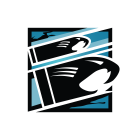

Sébastien "Buck" Côté
Follow me. I know a shortcut.
After excelling in his ERT role he was invited by the Canadian military to re-up and become a member of JTF2. Côté continued to expand his repertoire of skills, including high-speed tactical driving on both land and water, hazardous materials management, and hostage rescue. In 2015, he was recruited to join Rainbow alongside Tina Lin Tsang.
Gameplay Description
A Medium Health Operator, Buck's unique gadget is an underbarrel shotgun mounted under his weapon known as the "Skeleton Key", otherwise designated as the SK 4-12. The shotgun has a higher destructive potential than any of the other shotguns.
Device Description
Toggles under-barrel shotgun attachment on his main weapon.
The Skeleton Key, an under-barrel mounted 12 gauge shotgun, allows Buck to swiftly breach and target hostiles. By changing hand positions on his assault rifle, he is able to quickly switch from ranged to close-quarter combat. The Skeleton Key is also an effective breaching tool to destroy barricades or create a line of sight.